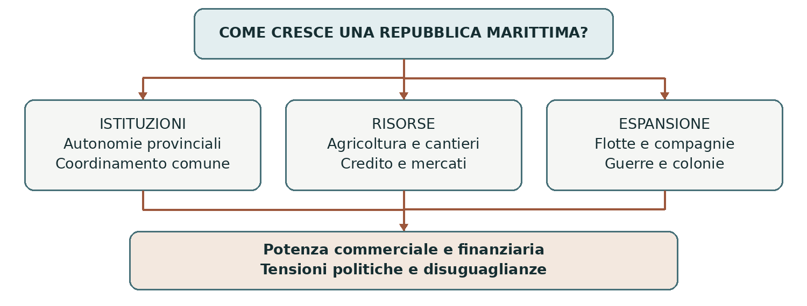

LA REPUBBLICA NEL SEICENTO
Le Province Unite
Le Province Unite costruirono una repubblica in cui autonomia territoriale, governo delle élite cittadine e potenza commerciale si sostenevano e si contrastavano. Il Seicento fu una stagione di grande sviluppo marittimo, finanziario e culturale. Questa prosperità comprendeva però disuguaglianze interne e un’espansione coloniale spesso violenta.
0. Domanda generatrice
Come poté una repubblica di province autonome diventare una grande potenza commerciale e militare?
In sintesi L’assenza di un re non significava assenza di governo comune. La risposta nasce dall’intreccio fra istituzioni, risorse economiche e difesa.
1. Il mondo precedente
La rivolta contro Filippo II aveva unito territori e città intenzionati a difendere privilegi e sicurezza religiosa. L’Unione di Utrecht del 1579 e il rifiuto del sovrano nel 1581 prepararono il consolidamento repubblicano del 1588. L’indipendenza fu riconosciuta dalla Spagna soltanto nel 1648.
Le sette province erano Olanda, Zelanda, Utrecht, Gheldria, Overijssel, Frisia e Groninga. La più ricca
e influente era l’Olanda, ma “Olanda” e “Province Unite” non sono sinonimi esatti. Città portuali,
campagne specializzate e collegamenti con il Baltico costituivano risorse anteriori alla piena indipendenza;
il successo seicentesco non nacque dal nulla.
In sintesi La repubblica ereditò autonomie e reti economiche già sviluppate. Il problema era farle cooperare senza cancellarle.
2. Le fratture
La guerra contro la Spagna richiedeva eserciti, flotte, fortificazioni e tasse comuni. Le province volevano però conservare il controllo delle proprie decisioni. Nacque così una tensione costante fra coordinamento generale e autonomie territoriali, accentuata dal peso finanziario dell’Olanda.
Anche la società religiosa era plurale. La Chiesa riformata godeva di una posizione privilegiata; cattolici, ebrei e altri gruppi potevano trovare spazi di vita e culto, ma con limiti variabili. La tolleranza relativa favorì arrivi di persone e competenze, senza coincidere con l’uguaglianza civile e politica di tutti.
In sintesi La difesa comune e la pluralità sociale richiedevano compromessi. Le istituzioni distribuivano il potere fra più centri.
3. Attori, gruppi e conflitti
La repubblica era dominata soprattutto da élite cittadine e nobiliari. I lavoratori, le donne e gran parte degli abitanti non partecipavano direttamente al governo: repubblica non significa qui democrazia moderna.
| Attori | Obiettivi e interessi |
|---|---|
| Stati provinciali | Assemblee dei corpi privilegiati, soprattutto città e nobiltà, con composizione diversa secondo la provincia. |
| Stati generali | Delegati provinciali riuniti all’Aia per gli affari comuni, in particolare guerra e politica estera. |
| Statolder | Carica provinciale di origine luogotenenziale, con funzioni politiche e militari; spesso affidata agli Orange. |
| Pensionario d’Olanda | Alto funzionario degli Stati d’Olanda; il suo peso politico deriva anche dalla forza della provincia. |
In sintesi Non esisteva un unico presidente della repubblica con poteri uniformi. Le cariche e le assemblee interagivano entro un sistema di autonomie.
4. Il processo storico
Autonomia repubblicana e forza degli Orange
Gli Stati generali rappresentavano le province, non una popolazione di elettori individuali. Le decisioni più importanti richiedevano un ampio consenso, e spesso l’unanimità. Questo poteva rallentare l’azione, ma rendeva possibile la collaborazione fra territori gelosi dei propri diritti.
Il partito degli Stati, legato a molti reggenti cittadini e ai ceti mercantili, difendeva le autonomie e il ruolo delle assemblee. Gli orangisti sostenevano il prestigio militare e politico della casa d’Orange. Le divisioni non corrispondevano perfettamente a mercanti contro nobili: pesavano religione, città e circostanze della guerra. In varie province vi furono periodi senza statolder, come in Olanda dal 1650 al 1672.
Terra, acqua e reti commerciali
Dighe, canali e drenaggi consentirono di proteggere e ampliare le superfici coltivabili. I polder erano
terreni sottratti alle acque e mantenuti asciutti con opere continue. Queste tecniche avevano origini
medievali; nel Seicento capitali e organizzazione ne permisero un ulteriore sviluppo. Le campagne
praticavano colture specializzate e allevamento rivolti al mercato.
La flotta mercantile collegava il Baltico, l’Atlantico e il Mediterraneo. Amsterdam divenne un grande
centro di deposito, trasformazione e redistribuzione delle merci. Cantieri, manifatture, pesca, assicurazioni
e credito si sostenevano reciprocamente. La Banca di Amsterdam, fondata nel 1609, facilitava i
pagamenti; la Borsa favoriva contrattazioni e investimenti.
Compagnie e competizione internazionale
La Compagnia delle Indie orientali, VOC, fondata nel 1602, raccolse capitali da più investitori e ottenne
un monopolio commerciale con poteri pubblici oltremare. La Compagnia delle Indie occidentali, WIC,
nata nel 1621, operò nell’Atlantico. Commercio, guerra e colonizzazione si intrecciavano: compagnie e
autorità ricorsero anche a conquista, schiavitù e lavoro forzato.
L’espansione provocò conflitti con concorrenti europei e poteri locali. Le guerre anglo-olandesi del Seicento e l’attacco francese del 1672 mostrarono la vulnerabilità della repubblica. La crisi del 1672 rafforzò Guglielmo III d’Orange. Il riconoscimento del 1648 non aveva dunque eliminato la necessità di difendere indipendenza e rotte.
In sintesi La potenza repubblicana dipese da competenze, capitali e istituzioni capaci di finanziare la difesa. Le stesse reti commerciali generarono rivalità e dominio coloniale.
Lo snodo decisivo
1602: la VOC unì investimenti privati e autorizzazione pubblica. È un esempio concreto di come il commercio potesse diventare strumento di potenza dello Stato.
5. Le fonti in dialogo
La concessione alla VOC del 1602
Fonte: concessione degli Stati generali alla VOC, 20 marzo 1602, conservata al Nationaal Archief. Il documento si rivolge alla compagnia e agli operatori soggetti all’autorità della repubblica.
Contenuto — sintesi didattica: La VOC riceve per ventuno anni un diritto esclusivo sul commercio olandese nell’area indicata dalla concessione. Può inoltre trattare con autorità asiatiche, costruire forti e mantenere forze armate.
Interpretazione e limiti: Il testo mostra l’autorizzazione dello Stato, non il consenso delle popolazioni coinvolte. Per ricostruire gli effetti dell’espansione occorrono anche testimonianze locali e documenti sulle pratiche di conquista e lavoro.
Domanda di lettura: Quali poteri distinguono la VOC da una semplice impresa di compravendita?
Fonte — Nationaal Archief, Octrooi voor de VOC
In sintesi La fonte rende visibile il legame fra mercato e potere pubblico. La prosperità va valutata insieme alle sue condizioni politiche e sociali.
6. Conseguenze e nuovo assetto
Le Province Unite divennero un centro di commercio, finanza, editoria, scienze e arti. L’urbanizzazione e la presenza di committenti privati sostennero un mercato culturale molto vivace. La loro esperienza mostrava che una grande potenza poteva essere governata attraverso una repubblica di élite anziché una monarchia.
Restavano forti disuguaglianze. La tolleranza religiosa era limitata e l’autonomia cittadina non assicurava diritti uguali a tutti. Nelle aree coloniali la ricerca del profitto si accompagnò a coercizione e sfruttamento: questi aspetti appartengono alla stessa storia dello sviluppo commerciale.
In sintesi La repubblica combinò libertà provinciali, governo oligarchico e potenza marittima. Sono elementi da considerare insieme.
7. Conclusione
Le autonomie poterono sostenere la potenza perché città e province disponevano di risorse e istituzioni per cooperare. Questa cooperazione richiese negoziazioni continue e non eliminò conflitti, esclusioni e pratiche coloniali violente.
Sintesi finale Sette province conservarono ampie autonomie. Gli Stati generali coordinavano gli affari comuni. Reggenti e Orange proponevano equilibri politici diversi. Agricoltura specializzata, navigazione e finanza si rafforzavano a vicenda. Il successo commerciale comprendeva guerre e dominio coloniale.
Per studiare e collegare
Coordinate essenziali
Spazio: sette province del nord dei Paesi Bassi; reti nel Baltico, Atlantico e Oceano Indiano. Tempo:
consolidamento nel 1588; sviluppo seicentesco; indipendenza riconosciuta nel 1648.
Saperi irrinunciabili
1. Olanda è una provincia, non il nome preciso dell’intera repubblica.
2. Gli Stati provinciali conservavano ampi poteri.
3. Gli Stati generali trattavano gli affari comuni all’Aia.
4. Lo statolder era una carica provinciale, spesso ricoperta dagli Orange.
5. Il pensionario d’Olanda influiva sulla politica generale grazie al peso della provincia.
6. Il governo era oligarchico e il voto non era universale.
7. Polder e agricoltura specializzata richiedevano tecniche, capitali e cooperazione.
8. Amsterdam univa commercio, manifatture e finanza.
9. VOC e WIC intrecciavano attività economica e potere coloniale.
10. La tolleranza relativa conviveva con privilegi confessionali ed esclusioni.
Mappa concettuale

Le risorse economiche permettono di finanziare la difesa; la difesa protegge le reti commerciali. Le compagnie estendono questo rapporto oltremare.
Strumenti e attività
Linea del tempo ragionata
| Quando | Che cosa cambia |
|---|---|
| 1579–1588 | Dall’Unione di Utrecht al consolidamento della repubblica. |
| 1602 | Fondazione della VOC e organizzazione del commercio asiatico. |
| 1609 | Fondazione della Banca di Amsterdam e inizio della tregua con la Spagna. |
| 1621 | Fondazione della WIC e ripresa della guerra contro la Spagna. |
| 1648 | Riconoscimento internazionale dell’indipendenza. |
| 1672 | Invasione francese e rafforzamento politico di Guglielmo III. |
Vocabolario essenziale
Reggenti. Membri delle élite che governavano le città e influivano sulle assemblee.
Oligarchia. Governo esercitato da una cerchia ristretta di persone o famiglie.
Polder. Terreno protetto dalle acque e mantenuto asciutto mediante drenaggio.
Compagnia privilegiata. Impresa cui lo Stato concede diritti esclusivi e talvolta poteri pubblici.
Attività di comprensione
1. Disegna i rapporti fra Stati provinciali, Stati generali e statolder, distinguendo il livello provinciale da quello comune.
2. Collega in un testo di 10 righe agricoltura, flotta mercantile, Banca e Borsa.
3. Usando la concessione alla VOC, discuti la tesi “L’espansione olandese fu soltanto commerciale”.
Fonti e approfondimenti
Lezione di riferimento: «moderna.ppt», diapositiva 7. I collegamenti seguenti permettono di leggere la fonte e approfondire i passaggi centrali.
Nationaal Archief — Archivio della VOC e concessioni
Nationaal Archief — Unione di Utrecht